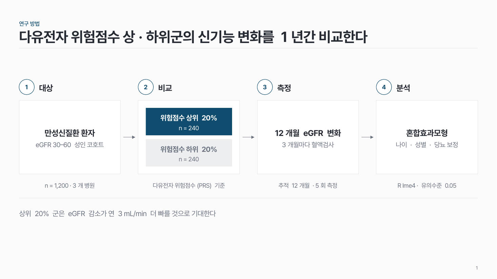
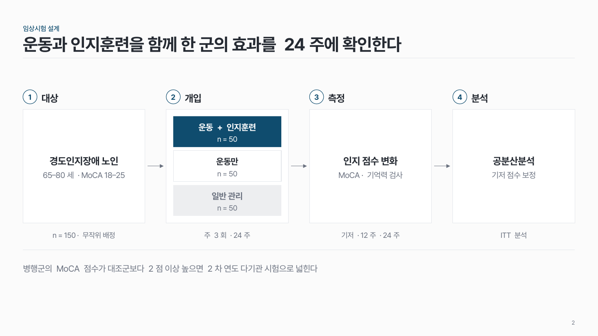
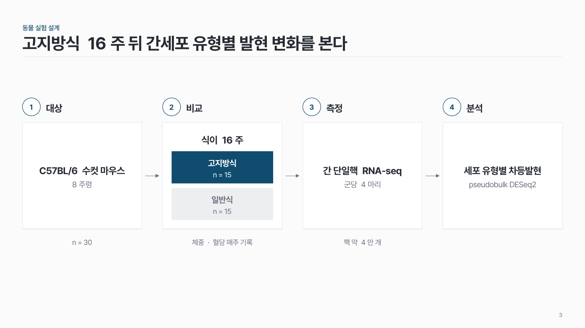

연구 설계 모식도 res-01
대상 → 비교 → 측정 → 분석 네 칸으로 연구 방법을 한 장에. 비교 칸 안에 군을 쌓아요.

이 시안
관찰 연구 · 비교 2군(하위군 회색) · 핵심 군 강조 · 결론 줄
슬라이드 제목: 다유전자 위험점수 상·하위군의 신기능 변화를 1년간 비교한다
언제 쓰나
누구를, 어떻게 나눠, 무엇을 재고, 어떻게 분석하는지 방법론 개요 한 장이 필요할 때요. Journal club 의 Study design, 과제 발표의 연구 방법, Progress report 첫 발표에 맞아요.
이럴 땐 다른 패턴
- 모집 · 탈락 인원 흐름이 핵심이면 샘플·코호트 흐름
- 분석 파이프라인 단계면 단계별 열 + 알약
- 연차 일정이면 연차별 간트
구성
- 네 칸: 대상, 비교(또는 개입), 측정, 분석. 칸마다 번호 + 제목.
- 칸 안에 굵은 한 줄 + 설명.
- 둘째 칸 안에 군 2–3개를 쌓아요. 대조군은 옅은 회색.
- 칸 아래에 근거 한 줄 (인원 · 기간 · 지표).
지킬 것
- 칸은 꼭 4개, 제목 6자 이내.
- 강조는 핵심 군 하나.
- 관찰 연구면 둘째 칸 제목은 '비교', 개입 연구면 '개입'.
하지 말 것
- 방법 문장을 그대로 붙여 칸을 글로 채우지 않아요.
- 군마다 다른 색을 쓰지 않아요.
시안 비교
같은 내용을 옵션만 바꿔 그렸어요. 그림을 누르면 크게 보여요.
A관찰 연구 · 비교 2군(하위군 회색) · 핵심 군 강조 · 결론 줄
슬라이드 제목: 다유전자 위험점수 상·하위군의 신기능 변화를 1년간 비교한다

B개입 연구 · 3군 · 대조군 회색
슬라이드 제목: 운동과 인지훈련을 함께 한 군의 효과를 24주에 확인한다

C동물 실험 · 둘째 칸 설명 + 2군 · 근거 줄 일부만 · 결론 줄 없음
슬라이드 제목: 고지방식 16주 뒤 간세포 유형별 발현 변화를 본다